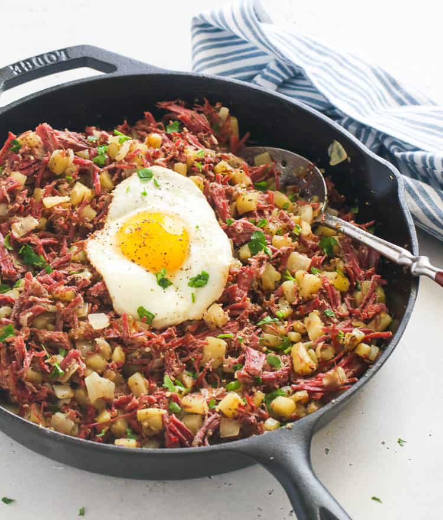

Ultimate Corned Beef Hash

A hearty hash of beef, potatos, and vegetables perfect for breakfast.
Ingredients
- 12-16 oz canned corned beef
- 1 Idaho potato
- 1 white onion
- 2 tbsp butter
- 2 cloves garlic
- 1/2 cup cauliflower
- 1/2 cup bella or shitake mushrooms
- 1 tbsp worchestershire sauce
- 1 tsp soy sauce
- 1 tbsp paprika
- 1 tsp thyme
- 1 tsp rosemary
- 1 tsp basil
- Salt and pepper to taste
Instructions
- Dice potatoes no larger than 1/2 inch and spinkle with salt and pepper. Airfry for 10 minutes at 350°F to maximize crispiness, or alternatively boil them for 10 minutes to soften.
- While potatoes cook, mince onion, garlic cauliflower, and mushrooms separately. Heat skillet on medium-high.
- Add butter to hot pan and wait until butter is melted and transparent, then add onions, cauliflower, and garlic. Cook until onions are transluscent then add mushrooms.
- Wait a couple minutes then add corned beef and potatos. Break corned beef up with spatula while adding worchestershire, soy sauce, paprika, thyme, rosemary, and basil.
- Turn heat up to high and mix ingredients evenly. Press down on mixture with spatula to crisp beef. Flip when necessary to crisp both sides. Remove when beef is browned, served best with runny eggs and hot sauce.